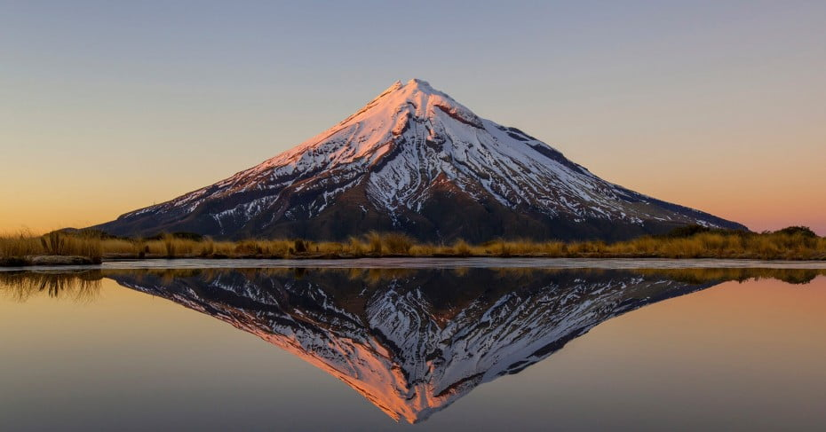
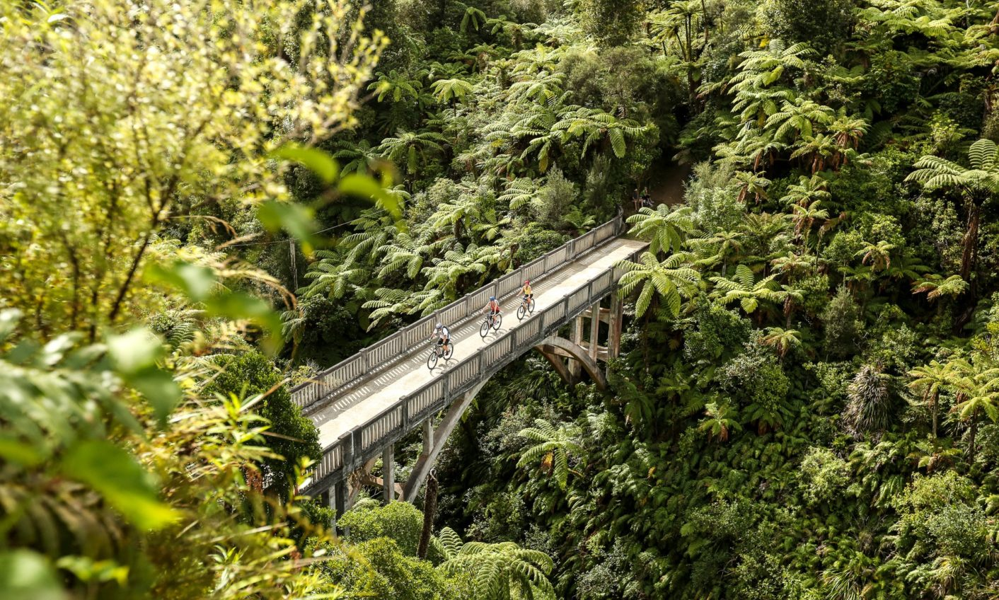

Northland
Northland is a region of endless cultural, historical, offering the visiters to have a unique glimpse of New Zealand's past and present.In NZ Northland is considered birthplace, as the first European sttlers arrived here.
Auckland
Auckland is a very diversed region, and it's famously called as "City of sails". Overall Auckland blends with natural beauty, offering visitors a dynamic experience shaped by its diverse culture, stunning landscapes,and vibrant lifestyle.
Waikato

Waikato is known for their longest river in New Zealand call Waikato river, which flows through the region. It's also known for their glowworms caves, visitors explore the cave through ,with boat rides. Mainly it's considered as a compellingdestination for tourists.
Bay of Plenty

Bay of Plenty is a major for kiwifruit cultivation in New Zealand,with orchards covering extensive areas. Also know as the "Kiwifruit Capital of the World". Taurange is the largest city in the Bay of Plenty and is the fifth-largest city in New Zealand.
Gisborne

Gisborne was the first city in the world to see the sunrise due to its location. Gisborne has very rich Maori culture. The region is home to several important marae. (Maori meeting grounds) The attractions of this region are beautiful beaches, which are popular for surfing, swimming and other water sports.
Hawke's Bay

Hawke's Bay is located on the east caost of New Zealand. Hawke's bay in know as one of the New Zealand's oldest and most prestigious wine regions. Mainly known for, Merlot, and Syrah. Napier is in this region, one of the main urban centers in Hawke's Bay, worldwide famouse for their Art Deco architecture.
Taranaki
Mount Taranaki is known as Mount Egmont. It was nearly symmetrical, dormant stratovolcano and a popular destination for hiking,climbing, and photography. Egmont National Park is also a popular destination beacuse of its beautiful landscapes, including lush rainforests, waterfalls. New Plymouth which in one of the cities, hosts this international fetivals that attracts artists and visitors.
Manawatu-Whanganui
Manawatu-Whanganui is loacated in the lower North Island of New Zealand. They are known for their natual feature, which offers such beautiful views, native bush walks. Palmerstone North is the largest in the region, known for their educational insitutions including Massey University and several other. This city has very large amount of student population.
Wellington

Wellington is 2 hours away from Palmerston North, and is also the capital city of New Zealand. They are known for their city gallery, the city is filled with art scenes, with galleries,museums, and theaters showcasing locatal and interantional talent. This city many fiverse range of easteries in cafe and in Markets the hosts offer fresh produce gourmet food, and artisanal products.
Tasman

Nelson is laocted at the top of the South island, is known for its fiverse and beautiful landscapes. Nelson is a city that's within the region of Tasman, which is known for its vibrant art scene and sunny climate. This regions offers many activities, outdoors and breathtaking views which includes mountains, rivers and coastlines.
Nelson

Nelson has one of the highest sunshine hours in New Zealand, which is better weather to enjoy outdoor activities. The city is also known for their annual Nelson Art Festival. They produce very high quality of wines, this region is renowned for its vineyard and wineries. The popular places here also beaches which are ideal for swimming, sunbathing, and family outings.
Marlborough

Marlborough is known for is seafood, mainly its green-lipped mussels. Which are farmed in the region's clean water. This region has a rich history and vibrant local culture, with diversed festivals and events celeberating its unique characteristics.
West Coast
West coast is known for their mos beautiful features dramtic coastal scenary, lush rainforests, and mountain ranges. Along he state highway 6 offers such a breathtaking views of the Suthern Alps and the Tasman sea. This region also have a rich history which is related to gold mining.